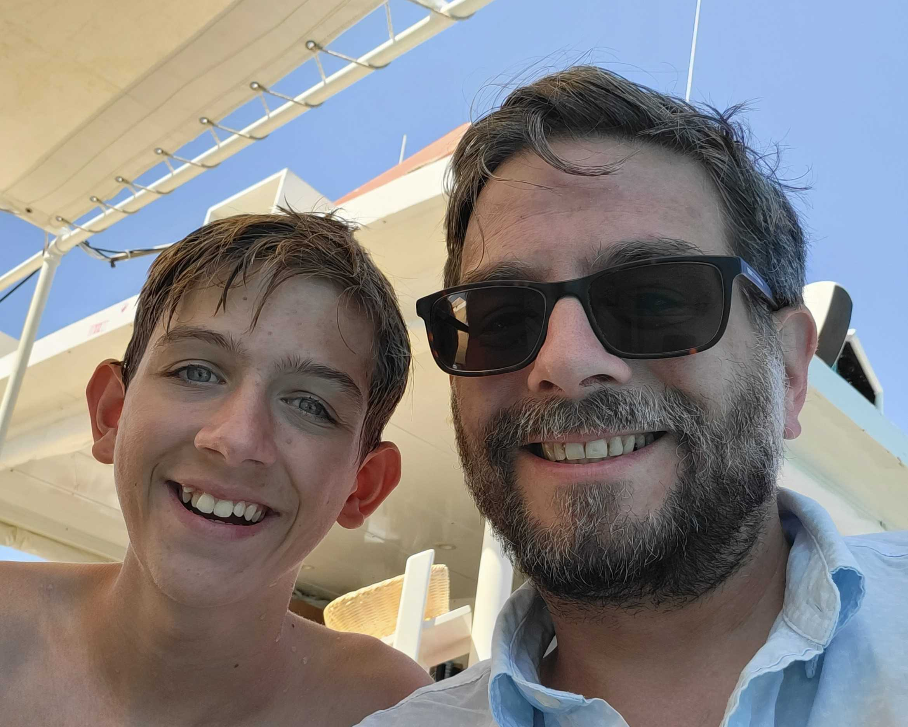

My family
I live with my wife, Adri, and our 2 kids, Jon & Izzy. We live near Birmingham in the West Midlands, in the same house we bought as our first house in 2007.
Here's a little about each of them:
Adri
Adri is originally from South Africa and works as an Art teacher. She's amazing at her job and has a real passion for her subject. We've been married for 17 years and we met at a Halloween party in 2005 (she was Medusa and I was a zombie). She's my best friend and there's no-one I'd rather spend an evening with (splitting a cheeseboard and drinking pinotage).

Jon
Jon is 16 (ok, 15, but I figured I'd say 16 as I got his age wrong in the bank recently) and is a pc-gaming fiend. The hours he's put into Fortnite, Rocket League, Roblox, Minecraft and many others, is baffling. He stays up until about 3am every night and struggles to wake up in the morning. My parents are very pleased that he's being exactly as I was at the time. He's a great son though - loving, caring and supportive, clever and talented at whatever he tries (from football to piano).
Izzy
Izzy is 13. Actually 13. She's a straight-A student who really cares and does her best at everything she does. She's empathetic and wise beyond her years. She's got a really similar music taste to me and is starting to learn guitar at the same age as I did. It's taken her a while to enjoy playing, but after several months (and lessons not given by me) she seems to have caught the bug. She's also an amazing singer and aside from singing in the school choir, she contributed harmonies to a song I recorded called "Penny Black". Finally, her super-power is awkwardness.
It's still pretty basic, but it's a step up from Page 1. I'm learning more about HTML and CSS every day, and I'm excited to see how my skills develop as I continue to learn.
Stay tuned for more updates as I continue to build my first web page!